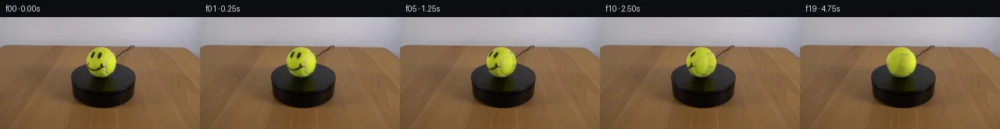
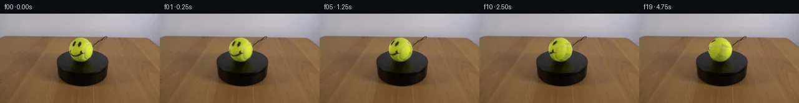
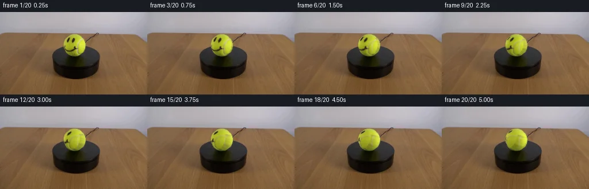
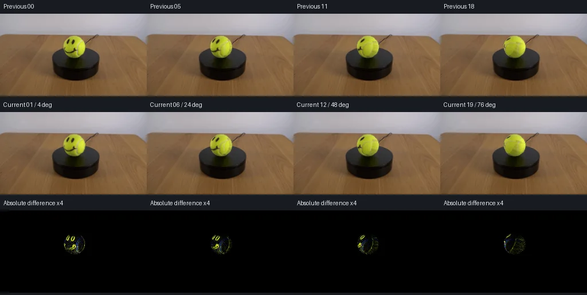

V0 · 初版
2026-11-05T18:00:31.564401+00:00 · RGB b0e69c7e8758
![]()
Observable Generation Trace
把最终像素视频、Harness 冻结的每轮候选、真实工具事件和 Agent 自述放在同一页。可观测证据与模型自述分开标记，避免把“模型说它检查过”误当成真实工具调用。
![首帧]()
Static locked-off single-shot with fixed frame throughout filmed with constant framerate in real-time. The scene shows a realistic scientific demonstration. The scene only contains the described setup and actions. The tennis ball with a smiley face rotates slowly clockwise on the black platform.
首帧显示在左侧播放器初始画面。Track 权限、隔离和 tensor 一致性来自 run manifest，而不是 METHOD.md。
默认勾选初版和最终版；可选其他版本一起同步播放。仅检查图更新的连续重复快照已合并，回退旧视频仍保留为一次修订。
Observable events
来源：events.jsonl + run manifest
此 Track 禁止读取输出图片。逐轮预览由外部 Harness 自动冻结，只用于事后审计，生成 Agent 当时看不到这些页面。
Frozen candidates
每张图来自该 round 的真实 00 / 01 / 05 / 10 / 19 帧

pixels dc7cc5ca115b7c89 · code d3f9f43cc7375861
--- previous/generate.py
+++ current/generate.py
@@ -0,0 +1,226 @@
+"""Generate a slow vertical-axis ball turn using only the supplied photograph.
+
+No renderer, learned model, external reference, or generated image is an input.
+"""
+from pathlib import Path
+import json
+import math
+
+import numpy as np
+from PIL import Image, ImageDraw
+from scipy import ndimage as ndi
+
+from artifact_io import save
+
+
+ROOT = Path(__file__).resolve().parent
+NFRAMES = 20
+FPS = 4
+CX, CY, RADIUS = 129.5, 57.7, 20.0
+ELEVATION = math.radians(16.0)
+DEGREES_PER_SECOND = 16.0
+
+
+def smoothstep(lo, hi, value):
+ t = np.clip((value - lo) / (hi - lo), 0.0, 1.0)
+ return t * t * (3.0 - 2.0 * t)
+
+
+def rotate(points, radians, axis):
+ """Rodrigues rotation, with camera coordinates x right/y up/z near."""
+ cosine, sine = math.cos(radians), math.sin(radians)
+ return (points * cosine + np.cross(axis, points) * sine
+ + np.sum(points * axis, axis=-1)[..., None] * axis * (1.0 - cosine))
+
+
+def fit_illumination(image, normals, radius_squared):
+ """Robust smooth RGB lighting fit, rejecting felt markings and outliers."""
+ x, y, z = normals.transpose(2, 0, 1)
+ basis = np.stack((np.ones_like(x), x, y, z, x*y, x*z, y*z,
+ x*x-y*y, y*y), axis=-1)
+ r, g, b = image.transpose(2, 0, 1)
+ valid = ((radius_squared < 0.89) & (g > 75) & (r > 65)
+ & (g > r * 0.97) & (b < g * 0.55))
+ design, values = basis[valid], image[valid]
+ weights = np.ones(len(values))
+ for _ in range(8):
+ root_weights = np.sqrt(weights[:, None])
+ coefficients = np.linalg.lstsq(design * root_weights,
+ values * root_weights, rcond=None)[0]
+ error = np.sqrt(np.mean((values - design @ coefficients)**2, axis=1))
+ weights = np.minimum(1.0, 10.0 / np.maximum(error, 0.001))**2
+ lighting = np.clip(basis @ coefficients, [35., 35., 12.], [245., 250., 110.])
+ info = {"fit_pixel_count": int(valid.sum()),
+ "fit_median_rgb_residual": float(np.median(error)),
+ "fit_p90_rgb_residual": float(np.percentile(error, 90)),
+ "coefficients": coefficients.tolist()}
+ return lighting, info
+
+
+def continuation_grain(points):
+ """Deterministic object-attached fine felt grain on the unseen hemisphere."""
+ rng = np.random.default_rng(167)
+ directions = rng.normal(size=(36, 3))
+ directions /= np.linalg.norm(directions, axis=1)[:, None]
+ frequencies = rng.uniform(65.0, 200.0, size=36)
+ phases = rng.uniform(0.0, 2.0*np.pi, size=36)
+ grain = np.zeros(points.shape[:-1])
+ for direction, frequency, phase in zip(directions, frequencies, phases):
+ grain += np.sin(np.sum(points*direction, axis=-1)*frequency+phase)
+ grain *= 0.032 / np.sqrt(36.0 / 2.0)
+ broad = (0.010*np.sin(13.1*points[..., 0]+8.5*points[..., 1])
+ + 0.008*np.cos(16.0*points[..., 2]-9.0*points[..., 1]))
+ return 1.0 + (grain+broad)[..., None]*np.array([1.0, 1.0, 1.15])
+
+
+def main():
+ original = np.asarray(Image.open(ROOT/'first_frame.png').convert('RGB'))
+ assert original.shape == (144, 256, 3)
+ image = original.astype(np.float64)
+ yy, xx = np.indices((144, 256), dtype=np.float64)
+ nx, ny = (xx-CX)/RADIUS, (CY-yy)/RADIUS
+ radius_squared = nx*nx+ny*ny
+ nz = np.sqrt(np.maximum(0.0, 1.0-radius_squared))
+ normals = np.stack((nx, ny, nz), axis=-1)
+ lighting, fit_info = fit_illumination(image, normals, radius_squared)
+ albedo = np.clip(image/lighting, 0.0, 1.9)
+
… diff truncated; 139 more lines …
pixels e8f5426f978be7f0 · code a3e094484d66fc74
--- previous/generate.py
+++ current/generate.py
@@ -17,7 +17,7 @@
NFRAMES = 20
FPS = 4
CX, CY, RADIUS = 129.5, 57.7, 20.0
-ELEVATION = math.radians(16.0)
+ELEVATION = math.radians(28.10518378897139)
DEGREES_PER_SECOND = 16.0
@@ -210,6 +210,12 @@
'background_exact_all_frames': True,
'ball_interior_matte_pixel_count': int(matte.sum()),
'rotation_axis_camera_xyz': axis.tolist(),
+ 'camera_elevation_degrees': math.degrees(ELEVATION),
+ 'source_platform_top_ellipse': {
+ 'center_xy': [131.411, 77.665],
+ 'radii_xy': [41.575, 19.586],
+ 'boundary_fit_rmse_pixels': 0.30939,
+ 'measurement': 'Robust ellipse fit to unobscured back rim in the source image'},
'ball_center_xy': [CX, CY], 'ball_radius_pixels': RADIUS,
'angular_speed_degrees_per_second': DEGREES_PER_SECOND,
'lighting_fit': fit_info, 'transitions': per_transition,pixels e8f5426f978be7f0 · code 4f7408dfa54da0e7
--- previous/generate.py
+++ current/generate.py
@@ -3,6 +3,8 @@
No renderer, learned model, external reference, or generated image is an input.
"""
from pathlib import Path
+import base64
+import hashlib
import json
import math
@@ -187,6 +189,28 @@
assert np.array_equal(frames[0], original)
assert np.array_equal(frames[:, ~matte], np.broadcast_to(original[~matte],
(NFRAMES, (~matte).sum(), 3)))
+ # Independently decode the HTML player's first image and run-length patches.
+ html = (ROOT/'index.html').read_text()
+ player_data = json.loads(html.split('const DATA=', 1)[1].split(
+ ';\nfunction unpack', 1)[0])
+ decode = lambda blob: np.frombuffer(base64.b64decode(blob), dtype='<u4').copy()
+ player_pixels = decode(player_data['first'])
+ player_frames = [player_pixels.copy()]
+ for blob in player_data['deltas']:
+ packet = decode(blob)
+ position = 0
+ while position < len(packet):
+ start, length = map(int, packet[position:position+2])
+ position += 2
+ player_pixels[start:start+length] = packet[position:position+length]
+ position += length
+ assert position == len(packet)
+ player_frames.append(player_pixels.copy())
+ player_exact = np.array_equal(np.stack(player_frames),
+ packed.transpose(2, 0, 1).reshape(NFRAMES, -1))
+ assert player_exact
+ unique_frames = len({hashlib.sha256(frame.tobytes()).digest() for frame in frames})
+ assert unique_frames == NFRAMES
changes = np.abs(np.diff(frames.astype(np.int16), axis=0))
per_transition = []
for t, diff in enumerate(changes, start=1):
@@ -207,6 +231,11 @@
'tensor_shape': list(packed.shape), 'tensor_dtype': str(packed.dtype),
'first_frame_exact': bool(np.array_equal(frames[0], original)),
'all_pngs_match_packed_tensor': bool(png_ok),
+ 'html_player_reconstructs_tensor_exactly': bool(player_exact),
+ 'unique_frame_count': unique_frames,
+ 'diagnostic_image_dimensions': {
+ name: list(Image.open(ROOT/name).size)
+ for name in ['inspection.png', 'transition_check.png']},
'background_exact_all_frames': True,
'ball_interior_matte_pixel_count': int(matte.sum()),
'rotation_axis_camera_xyz': axis.tolist(),Final visual checks
Harness 保存的最终产物


Agent claims
以下文字由生成 Agent 撰写，不等同于工具证据
The supplied first frame is a 256 × 144 RGB photograph. The camera is fixed and looks slightly downward at a wooden tabletop against a pale wall. The wall/table boundary is around y = 36–39. A black round display platform spans approximately x = 91–174 and y = 58–116; its top is an ellipse partly obscured by the ball. A thin dark cable leaves the platform toward (170, 38). These parts are stationary. The platform is rotationally symmetric, so its rotation has no necessary visible change.
The neon yellow-green tennis ball occupies approximately x = 110–149, y = 38–78. Its projected center is approximately (129.5, 57.8), with radius about 20 pixels. A color-based measurement gives an interior bounding box of x = 111–148, y = 39–76, area 1,140 pixels. The near-black eyes and curved smile lie on its front-left side; a pale tennis seam is visible on the right. The ball has fine felt texture, brighter upper/right surfaces and a darker lower edge. The ball contacts the platform near (130, 78); its stationary shape and contact shadow are preserved.
Interpret “clockwise on the platform” as a turn around the vertical axis, clockwise when seen from above. The visible front surface travels toward image-left. The initial camera elevation estimate was 16 degrees. A subsequent numeric fit to the unobscured platform back rim gives center (131.411, 77.665), radii (41.575, 19.586), and boundary residual RMSE 0.309 pixels. Its axis ratio gives a refined camera elevation of 28.105 degrees, used in the final generation. The ball turns at 16 degrees/second, without translation, wobble, bouncing, camera movement, cuts, or added objects. A partial turn over five seconds is consistent with a slow rotating display. Surface marks and seams rotate with the ball; illumination remains fixed in the scene.
The generation will use local Python pixel operations: spherical inverse projection of the photographed front surface, illumination compensation, and a locally synthesized felt-colored continuation only for the originally hidden part of the sphere. All validation of generated output will use code and numeric results. The required contact sheet and transition diagnostic will be saved but will not be opened with an image viewer.
| Frame | Sample time (s) | Clockwise yaw (degrees) | Planned event |
|---|---|---|---|
| 00 | 0.00 | 0 | Exact supplied first frame. |
| 01 | 0.25 | 4 | Smile starts moving left; same silhouette and contact. |
| 02 | 0.50 | 8 | Eyes and smile translate over the curved surface. |
| 03 | 0.75 | 12 | Face turns slightly away; right seam advances. |
| 04 | 1.00 | 16 | Face progressively foreshortens. |
| 05 | 1.25 | 20 | Smooth constant-speed rotation continues. |
| 06 | 1.50 | 24 | Left eye approaches the side of the ball. |
| 07 | 1.75 | 28 | Smiley remains attached to the felt surface. |
| 08 | 2.00 | 32 | Face moves farther toward the left rim. |
| 09 | 2.25 | 36 | Right seam rotates into a more central view. |
| 10 | 2.50 | 40 | Increasing foreshortening of the face. |
| 11 | 2.75 | 44 | Leftmost face features begin passing out of view. |
| 12 | 3.00 | 48 | Only visible front-facing face regions are rendered. |
| 13 | 3.25 | 52 | The seam and felt rotate continuously. |
| 14 | 3.50 | 56 | More of the originally hidden right side is exposed. |
| 15 | 3.75 | 60 | Face is near the far left edge. |
| 16 | 4.00 | 64 | Face progressively disappears around the side. |
| 17 | 4.25 | 68 | Mostly yellow felt and seam face the camera. |
| 18 | 4.50 | 72 | Same steady turn, without acceleration. |
| 19 | 4.75 | 76 | End of the five-second clip's final 0.25-second sample. |
This is a local Python pixel continuation of the supplied photograph. It uses NumPy, SciPy and Pillow, with the provided artifact_io.py for output packaging. No external reference, learned model, external engine, network resource, or subagent was used. The attached initial image was available visually; generated images were inspected only by local code and numeric checks. No visual review of the generated frames is claimed.
The ball remains centered at (129.5, 57.7), with a projected radius of 20 pixels. It turns around the vertical axis, clockwise when viewed from above, at a constant 16 degrees per second. The 20 samples have angles 0, 4, …, 76 degrees at times 0, 0.25, …, 4.75 seconds. Each sample is displayed for 0.25 seconds, giving a five-second clip at 4 fps.
The camera elevation is 28.105 degrees. This was measured numerically from the unobscured back rim of the platform in the original frame: an ellipse with center (131.411, 77.665) and radii (41.575, 19.586), with a 0.309-pixel boundary fit RMSE. The elevation is the arcsine of its minor/major axis ratio. The final vertical rotation axis in camera coordinates is (0, cos(elevation), sin(elevation)), where x points right, y up, and z toward the camera.
(nx, ny, sqrt(1 − nx² − ny²)).original + coverage × (rendered_sample − rendered_zero). This anchors the sequence to the actual photograph and leaves the table, wall, cable, black platform, and background shadows exactly unchanged.Frame 00 is copied directly from first_frame.png. There is no ball translation, camera movement, acceleration, cut, or additional object. The platform has a symmetric black appearance, so its pixels remain fixed during the demonstrated turn.
Run python generate.py from this workspace to reproduce the sequence and numeric report.
frames/00.png through frames/19.png: 20 RGB frames at 256 × 144.pixels.npz: key pixels, shape (144, 256, 20), dtype uint32, values encoded as 0xRRGGBB.index.html: standalone player containing an exact initial frame and lossless pixel patches, with a 250 ms frame interval.inspection.png: eight-frame contact sheet, saved without image-view inspection.transition_check.png: previous/current/difference panels for transitions into frames 01, 06, 12, and 19, saved without image-view inspection.validation.json: tensor checks, geometry, temporal deltas, and predicted visible marking trajectories.Numeric validation confirms exact equality between frame 00 and the input, exact equality of every saved PNG with its packed tensor slice, 20 distinct frames, and exact reconstruction of every frame from the HTML player packets. All pixels outside the 1,140-pixel ball interior matte remain unchanged. Consecutive mean absolute RGB differences within the ball range from 4.00 to 8.42 intensity units, with a four-degree angular increment throughout. Surface trajectories turn left/up according to the camera elevation and progressively pass behind the sphere. These checks validate the artifact encoding, stationary scene, and prescribed motion; they are not a claim of visual review.